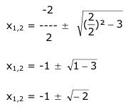

Aufgabe 63 Welche Koordinaten haben der Scheitelpunkt S und die Nullstellen N der Funktion y = 2x2 + 4x + 6? y = 2x2 + 4x + 6 | :2 y --- = x2 + 2x + 3 2 Quadratische Ergänzung : y --- = x2 + 2x + 1 – 1 + 3 2 mit x2 + 2x + 1 = (x + 1)2 y --- = (x + 1)2 + 2 |*2 2 y = 2(x + 1)2 + 4 Abgelesen : S(-1|4) Nullstellen: y = 0 0 = 2x2 + 4x + 6 |:2 0 = x2 + 2x + 3 p = 2 ; q = 3  Der Ausdruck unter der Wurzel ist negativ, deswegen hat diese Funktion keine Nullstellen. Oder: Der Scheitelpunkt liegt oberhalb der x-Achse, und die Parabel ist nach oben geöffnet, deswegen hat sie keine Schnittpunkte mit der x-Achse.